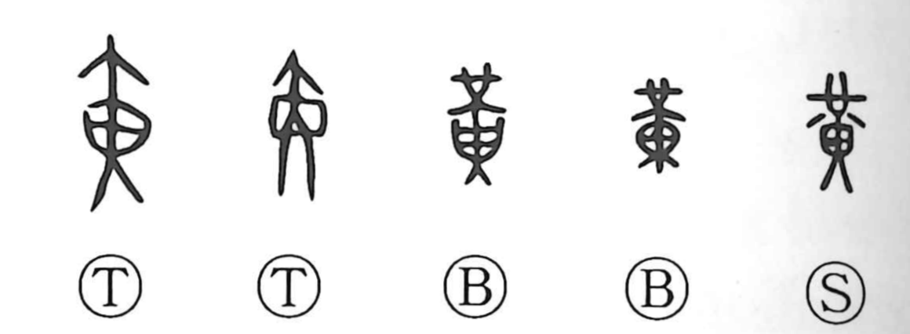

黄

Kun: ki, ko, kiiro, kibamu, kibami | On: kou, ou
yellow ・ yellow color
Explanation
The oracle-bone form of 黄 probably pictures a fire arrow, with the glow suggesting yellow. Bronze forms appear instead to show a pendant of jade worn at the waist. Its pale amber colour could likewise be called yellow. Both forms carry the colour through a concrete object.
Yellowing also marks fading vitality. Early uses describe ageing hair and plants losing their fresh colour, so 黄 can refer to decline or old age as well as the hue itself.
Its later association with earth and the centre belongs to the Five Agents system. That symbolic place broadens the colour’s ceremonial importance, while the older forms keep the light of fire and the warm colour of the jade before the eye.